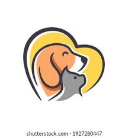

- 
Bienvenidos al Refugio de Animales Amor y Esperanza
En el Refugio de Animales "Amor y Esperanza", estamos comprometidos a proporcionar un lugar seguro y amoroso para animales abandonados y perdidos. Nuestra misión es rescatar, rehabilitar y reubicar a estos animales en hogares permanentes y cariñosos. Nuestra Misión En "Amor y Esperanza", creemos que todos los animales merecen una segunda oportunidad. Nos dedicamos a: Rescate: Intervenimos para salvar animales en situaciones de abuso, abandono o peligro. Rehabilitación: Proporcionamos cuidados médicos, alimentación adecuada y rehabilitación emocional para preparar a los animales para su nueva vida. Adopción: Trabajamos incansablemente para encontrar hogares amorosos y responsables para cada uno de nuestros animales..
Animales Disponibles para Adopción
MAX
Es muy jugueton, se recomienda tener un espacio grande porque lo que mass le gusta es correr, deben de saber tratarlo y cuidarlo, perfecto para que sea tu mejor amigo.

LOLA
Llamada lola de apenas 3 meses de nacida, es muy juguetona y traviesa, perfeta para que sea tu mejor amiga!!!.
TOMI
Es un perrito de 1.5 años, es muy jugueton y perfecto para convivir con niños, a la vez es muy tranquilo y ya esta educado para obedecer ordenes claras.